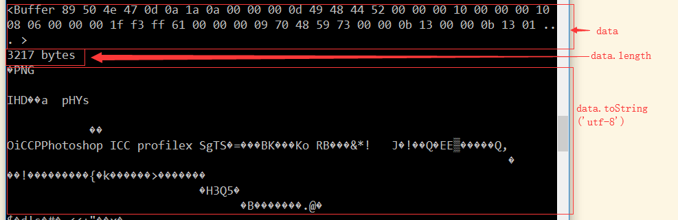

redux
fs 模块是文件系统模块，负责读写文件
异步读文件：
var fs = require('fs');
fs.readFile('test.json', 'utf-8', function (err,data){
if(err){
console.log(err);
}else {
console.log(data);
}
})
读取二进制文件：

fs.readFile('circle.png', function (err, data) {
if (err) {
console.log(err);
} else {
console.log(data);
console.log(data.length + ' bytes');
var text = data.toString('utf-8'); // Buffer -> String
console.log(text);
var buf = Buffer.from(text, 'utf-8');// String -> Buffer
console.log(buf);
}
});
读取二进制文件时，不传入文件编码时，回调函数的data参数返回一个Buffer对象。
结果：
同步读文件 fs.readFileSync
同步读取文件发生错误，则需要用try...catch捕获该错误
try {
var data = fs.readFileSync('sample.txt', 'utf-8');
console.log(data);
} catch (err) {
// err
}
写文件：writeFile('文件名',数据,回调函数)
var fs = require('fs');
var data = 'Hello, Node.js';
fs.writeFile('test.json', data, function (err) {
if (err) {
console.log(err);
} else {
console.log('success');
}
});
同步写文件：writeFileSync()
var data = 'Hello, Node.js';
fs.writeFileSync('test.json', data);
fs.stat() 获取文件大小，创建时间等信息,返回一个Stat对象
fs.stat('test.json', function (err, stat) {
if (err) {
console.log(err);
} else {
// 是否是文件:
console.log('isFile: ' + stat.isFile());
// 是否是目录:
console.log('isDirectory: ' + stat.isDirectory());
if (stat.isFile()) {
// 文件大小:
console.log('size: ' + stat.size);
// 创建时间, Date对象:
console.log('birth time: ' + stat.birthtime);
// 修改时间, Date对象:
console.log('modified time: ' + stat.mtime);
}
}
});